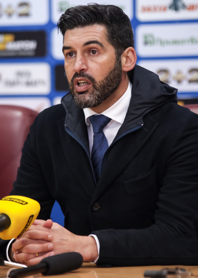

История
Создание клуба
Первыми футболистами на территории Донецкой области стали британские рабочие (преимущественно валлийцы), которые
приехали работать на металлургических предприятиях Джона Юза.
Осенью 1911 года при заводе Новороссийского общества (современный Донецкий металлургический завод) было открыто
«Юзовское спортивное общество», в составе которого действовал футбольный кружок, просуществовавший до 1919 года и был
сильнейшей командой Юзовки в досоветские времена. В 1920-х годах честь города представляла команда клуба имени Ленина,
основу которой составляли рабочие металлургического завода. Одним из самых известных воспитанников этой команды стал
Виктор Шиловский. Именно коллектив клуба им. Ленина провёл первый в Донбассе международный матч — осенью 1924 года были
разгромлены рабочие сборной Германии 5:0. В первой половине 1930-х годов лидером городского футбола стало «Динамо»,
которое проводило товарищеские игры с командами других городов СССР, главным соперником которого считали «Буревестник»,
который выступал на одном из лучших полей в Сталино — в месте, где в 1936 году будет построен центральный стадион
«Шахтёр».
Первые годы: 1936—1945
Футбольный клуб «Стахановец» 1937 год
К первому чемпионату СССР было допущено 27 команд, распределённых по силам на четыре группы: А, Б, В, Г.
В группе «В» по решению Всесоюзного комитета физкультуры место для участия в соревнованиях было предоставлено команде
угольщиков Донбасса. Основу составили игроки сборной города Сталино, которая принимала участие в первенстве УССР и СССР
(группа Б) 1935 года. Команда получила гордое имя «Стахановец» в честь знаменитого новатора шахтёрского движения Алексея
Стаханова. Областная газета «Социалистический Донбасс» 9 апреля 1936 года опубликовала решение чиновников:
«В команду войдут 22 лучших игрока Донбасса. Игроки будут освобождены от работы на производстве. Для улучшения класса
игры приглашены специальные тренера»
Газета «Социалистический Донбасс», выпуск от 9 апреля 1936
Организатором и первым главным тренером команды стал Николай Наумов, который одновременно был полевым игроком — выступал
в нападении. 2 мая 1936 года команда вновь, пока под флагом сборной города, разгромила в товарищеской игре московский
«Фрезер» — 6:0. Костяк команды составили футболисты горловского и сталинского «Динамо».
Организатором и первым главным тренером команды стал Николай Наумов, который одновременно был полевым игроком — выступал
в нападении. 2 мая 1936 года команда вновь, пока под флагом сборной города, разгромила в товарищеской игре московский
«Фрезер» — 6:0. Костяк команды составили футболисты горловского и сталинского «Динамо».
Первый матч (на первенство УССР) «Стахановца» состоялся 12 мая 1936 года в Горловке на стадионе имени Балицкого.
Соперником «горняков» стала одесское «Динамо». 15 000 зрителей стали свидетелями этого события. Матч закончился со
счётом 2:3. Первый же официальный матч «Стахановец» провёл в Казани против «казанского Динамо» и уступил 1:4 (автором
единственного гола в составе гостей и, соответственно, первого в чемпионате стал Фёдор Манов). Усилив состав лучшими
футболистами Донбасса, «Стахановец» в 1938 году добился права представлять свой край в группе сильнейших. И хотя
последующие три года команда стабильно занимала 11-12 места, пресса и футбольные специалисты давали высокую оценку игре
коллектива. И уже по результатам сезона 1940 года звания мастеров спорта были присвоены следующим игрокам: Николаю
Кузнецову, Николаю Кононенко, Георгию Мазанову, Георгию Бикезину, Григорию Балабе и Антону Яковлеву.
Многие из футболистов после начала Великой Отечественной войны ушли на фронт, другие трудились на оборонных
предприятиях. В сражениях погибли Иван Устинов, Иван Путятов, Владимир Шкуров, Иван Горобец, Михаил Васин. Сталино
(современный Донецк) был освобожден 8 сентября 1943 года, и спустя два месяца благодаря усилиям Георгия Бикезина
состоялся первый послевоенный матч. В 1945 из довоенного состава остались лишь трое — Бикезин, Кузнецов, Юрченко.
Команду пришлось создавать заново, наверное, поэтому «Стахановец», несмотря на успехи 1941 года, включили лишь во вторую
группу. Среди новых имён в команде — Жуков, Шпинев, Брюшин, Андренко, Ливенцев.
Послевоенный период: 1946-1956
1946 и 1947 годы команда провела во второй группе. Последствия войны всё ещё сказывались не только на комплектовании
команды, но и на тренировочном процессе. В июле 1946 года общество «Стахановец» было преобразовано и получило название
«Шахтёр», которое отныне объединяло коллективы физкультуры угольных предприятий всех бассейнов страны. Сильнейшая
команда Донбасса стала именоваться «Шахтёр» (Сталино).
В 1947 году команду возглавил опытный московский тренер Алексей Костылев. Команда в украинской зоне заняла второе место
из 13 участников. Следующий сезон показал, что команда переросла уровень второго эшелона. Стабильные результаты, которые
демонстрировал «Шахтёр» последние годы, давали повод претендовать на место среди лучших команд страны, что и произошло.
«Шахтёр» вернулся первую группу чемпионата СССР в 1949 году, и в этом сезоне «горняки» выступили крайне неудачно.
«Шахтёр» потерпел 21 поражение в 34 матчах, 8 из них — с крупным счётом и занял последнее 18-е место, но дончанам
повезло, так как в этом сезоне понижения в классе не было. Причины неудачного выступления в 49-том были разные: команда
стояла на пороге возрастного кризиса, завершал карьеру ветеран команды — 40-летний Георгий Бикезин. Старший тренер
Георгий Мазанов, только окончивший школу тренеров, не смог создать боевой коллектив.
В 1950 году тренером команды стал Виктор Новиков. При нём костяк команды составили Александр Алпатов, Дмитрий Иванов,
Юрий Петров, Виктор Фомин, Николай Самарин и другие. Игра команды преобразилась — 11-е место с 33 очками. Результаты
сезона стали прочным фундаментом успеха следующего. Сезон 1951 года стал «бронзовым» годом для команды. «Шахтёр» впервые
поднялся на пьедестал почёта соревнований. Тот успех дончан связан с именем Александра Пономарёва — советского форварда,
завершавшего футбольную карьеру на родной донецкой земле. В итоге «Шахтёр» занял третье место. Игроки, сыгравшие 50 %
игр и больше, были награждены бронзовыми жетонами, дипломами третьей степени и удостоены звания «Мастер спорта СССР».
Удачно выступили дончане и в розыгрыше Кубка, дойдя до полуфинала. В октябре-ноябре «Шахтёр», совершил своё первое
заграничное турне в Болгарию и Румынию, но в Москве (как бы чего не случилось)решили послать фактически вторую сборную
СССР, взяв в турне лишь 6 горняков. Провальнно завершился сезон 1952 года, по итогам которого бронзовый призёр прошлого
года занял 13-е место и покинул класс «А». В команде были проблемы с дисциплиной, кроме того ряд ведущих футболистов
получил травмы. Набирать очки не могли помочь родные стены, поскольку согласно решению руководства советов по футболу,
весь чемпионат проводился в один круг, в Москве.
В сентябре 1952 года, после отстранения от должности старшего тренера Константина Квашнина, исполняющим обязанности
старшего тренера «Шахтёра» был назначен бывший футболист «Шахтёра» Александр Пономарёв, который хорошо знал возможности
коллектива. Перед ним была поставлена задача вернуться в класс «А». В 1953 году был назначен старшим тренером команды из
Сталино. В чемпионате 1953 года Пономарёв с командой выиграл подгруппу класса «Б», но в финальном круге клуб занял 3-е
место, что не дало право на повышение. В розыгрыше 1954 года дончане снова выиграли соревнования в своей подгруппе.
Финальный турнир проходил в Сталино — хозяева заняли 1 место в классе «Б» и получили право в 1955 году участвовать в
турнире класса «А». По возвращении в высший дивизион «горняки» занимали 7 место два года к ряду. В июне 1956 года
Пономарёв покинул пост главного тренера. Трое игроков в составе сб. Украины получили бронзовые медали Спартакиады
народов СССР 1956(М. Думанский, И. Бобошко, В.Сапронов).
1957—1959
Во второй половине 50-х в «Шахтёре» началась тренерская чехарда, сменилось много тренеров. С новыми тренерами приходили
новые игроки, зачастую находящиеся на закате своей карьеры. Во главу был поставлен результат. В 1957 году ДСО «Шахтёр»
было ликвидировано, а команда с тех пор представляла новообразованное общество «Авангард». В этом году старшим тренером
был назначен Ермилов, но уже в 58-м его сменил Дангулов. В 1959 году старшим тренером становится Новиков с ним команда
уверено держалась на последнем месте в чемпионате СССР и в сентябре года клуб возглавил Щегоцкий с которым команда
проиграла только 2 матча, но это не помогло подняться с последнего места. От понижения в классе команду спасла
трансформация формата советского первенства на две подгруппы. В 1960 году, в подгруппе II класса «А» команда из Сталино
заняла 8-е место, а в июне 1960 года Щегоцкого сменил Олег Ошенков.
Игра «Шахтёра» в 55-59 годы напрямую зависела от его лидеров — Ивана Бобошко, Александра Алпатова, Ивана Федосова,
Валентина Сапронова, Вячеслава Алябьева, Петра Пономаренко.
Кубковые триумфы 1960-х
Эти успехи связаны с приходом в июле 1960 года нового наставника — Олега Ошенкова. Российский специалист был известен
украинским любителям футбола, ведь именно под его руководством киевское «Динамо» выиграло серебряные медали чемпионата
страны, а в 1954 году получило первый всесоюзный трофей — Кубок СССР по футболу. Новый наставник «Шахтёра» наладил
взаимодействие между отдельными звеньями команды, научил коллектив умело использовать сильные стороны в своей игре,
поднял психологию и уверенность игроков в себе.
Сразу во второй год работы тренера «горняки» достигли наивысшего успеха во всесоюзных турнирах — выиграли Кубок СССР. По
дороге к финалу украинцы обыграли «Динамо» (Хмельницкий), «Спартак» (Фергана), «Динамо» (Тбилиси), «Шахтёр»
(Сталиногорск) и «Адмиралтеец» (Ленинград). Соперником в решающей игре было столичное «Торпедо» — чемпион СССР, в
составе которого играли звёзды советского футбола: Виктор Шустиков, Леонид Островский, Валерий Воронин, Слава Метревели,
Геннадий Гусаров, Валентин Иванов и другие. После первого тайма счёт был 1:1, а во втором Юрий Ананченко делает дубль и
приносит победу «Шахтёру» — 3:1. Успех команды из областного центра был сенсационным — чиновники были настолько уверены
в успехе «торпедовцев», что на почётных дипломах, которые вручили «горнякам», были написаны имена футболистов «Торпедо».
«Шахтёр» (Сталино) победитель Кубка СССР 1961 года.
В 1962 году «Шахтёр» снова выиграл Кубок страны, победив «Знамя труда» (Орехово-Зуево) — команду из класса «Б» со счётом
2:0. В следующем сезоне украинцы снова вышли в финал Кубка, но на этот раз уступили «Спартаку» — 1:2. В чемпионате клуб
выступал стабильно и в 1964 году занял высокое за последнее десятилетие пятое место. В конце 1960-х годов замечательные
результаты показывали дублёры «Шахтёра» — молодые футболисты победили в первенствах СССР 1967 и 1969, а в 1968 году
заняли второе место. Главным талантом считали вратаря Юрия Дегтерёва, который регулярно выступал за юношескую сборную
Советского Союза. Основа команды нуждалась в обновлении и свежей мотивации. По результатам сезона 1968 дончане заняли
четырнадцатое место, а когда осенью 1969 года «горняки» проиграли 4 матча подряд — тренера Ошенкова уволили.
Клуб переживал смену поколений — в 1970 в играх чемпионата на поле выходило 28 футболистов, в том числе 11 дебютантов.
Одним из немногих, кто хорошо проявил себя в составе донецкого клуба был нападающий Эдвард Козинкевич, который забил 9
мячей и по итогам сезона вошёл в всесоюзный список «33 лучших». В следующем году «Шахтёр», заняв последнее шестнадцатое
место, выбывает из элитного дивизиона.
1966—1975
В конце 1960-х подал в отставку Ошенков. Сезон 1966 года разделился для «горняков» на две части. Первый круг команда
завершила в числе аутсайдеров, но во втором десять туров к ряду «Шахтёр» не знал поражений, а вратарь «горняков» Юрий
Коротких — 913 минут держал свои ворота «сухими». Рекорд Коротких вошёл в тройку «сухих» серий вратарей отечественного
футбола за всю его историю.
Такую же яркую игру команда демонстрировала и в следующем сезоне. Во многом благодаря приходу в коллектив двух сильных
футболистов и харизматичных лидеров — Валерия Лобановского и Олега Базилевича. За два года, которые они провели в
Донецке, уровень команды значительно вырос. К тому же Лобановский дважды становился лучшим бомбардиром команды по итогам
года.
По окончании сезонов 1966 и 1967 «горняки» совершали турне по странам Африки, «Шахтёр» побывал в Конго и Судане.
Конфликт «Лобановский-Ошенков» не прошёл для команды бесследно. В середине сезона — 1968 из «Шахтёра» и футбола вообще
ушли Лобановский и Базилевич, в октябре 1969 года Ошенкова сменил Юрий Войнов.
Слабым утешением конца 1960-х годов для болельщиков «Шахтёра» могли стать «малые» золотые медали, которые завоевали
дублёры в 1967 и 1969 годах (в 1968 году заняли второе место). Тренировал резервистов Юрий Захаров. Вскоре его
воспитанники станут достойной сменой игрокам главной команды — Владимир Пьяных, Юрий Дудинский, Виктор Звягинцев,
Вячеслав Чанов, Анатолий Коньков.
В 1970 году Федерация футбола СССР для участия во втором официальном чемпионате Европы среди студентов в Югославии на
основе резервной команды «Шахтёра» формируется студенческая сборная СССР, старшим тренером который назначается Юрий
Захаров. Под руководством Захарова студенческая сборная СССР стала чемпионом Европы Архивная копия от 20 февраля
2020 на Wayback Machine. Из 16 игроков сборной золотые медали получили 10 человек из донецкого «Шахтёра»: Анатолий
Кулиш, Валентин Седнев, Валерий Шевлюк, Виктор Истомин, Владимир Захаров, Владимир Шевлюк, Владимир Юрецкий, Вячеслав
Чанов, Юрий Дудинский и Ярослав Кикоть. Ещё 6 человек представляли команды: Авангард из Макеевки (Анатолий Исаков),
Азовец из Жданова (Алексей Минин, Евгений Король и Олег Жилин) и донецкий Локомотив (Анатолий Котов и Владимир
Евдокимов).
В 1971 главная команда Донбасса вылетела в первую лигу. Призванный спасти положение, в прошлом игрок «Шахтёра», Олег
Базилевич. 34-летнему наставнику предстояло создать коллектив из игроков, в спешном порядке набранных прежним тренером —
Николаем Морозовым. Лишь во втором круге тренер смог определить круг футболистов, способных решить главную задачу —
возвращение в высшую лигу. Второе место стало проходным, и сезон 1973 года «Шахтёр» встречал в высшей лиге. Состав
команды стабилизировался, тон задавали Юрий Дегтерёв, Александр Васин, Виктор Звягинцев, Анатолий Коньков, Владимир
Сафонов, новички Валерий Горбунов и Виталий Старухин.
К трамплину на серебряный пьедестал в 1975 году «Шахтёр» подвёл недавний наставник дубля Юрий Захаров. Проработал
старшим тренером он недолго, и в начале триумфального для донбасского коллектива сезона его заменил Владимир Сальков.
Уверенно вошли в основной состав новички — Виктор Кондратов, Владимир Роговский, Юрий Резник. На всём турнирном пути
«Шахтёр» выглядел мобильным и волевым. В заключительном матче 9 ноября с действующим обладателем Кубка страны ереванским
«Араратом» — только победа давала преимущество «Шахтёру» в борьбе за второе место. Крупная победа со счётом 3:0 не
позволила усомниться в турнирных притязаниях дончан.
1976—1990
В 1976 году было проведено два чемпионата — весенний и осенний. Существенной была только одна потеря — Виктор Звягинцев
перешёл в киевское «Динамо». Однако на первые роли в команде стали выходить его партнёры по команде Михаил Соколовский,
Николай Федоренко, Владимир Роговский, Виктор Кондратов.
15 сентября 1976 года состоялся европейский дебют «Шахтёра», который оказался весьма успешным. Дончане в 1/32 финала
Кубка УЕФА крупно обыграли «в родных стенах» немецкий клуб «Динамо» из Берлина со счётом 3:0, исторический первый
еврокубковый гол «горняков» на 3-й минуте забил Владимир Роговский[16]. В ответном матче команды сыграли вничью 1:1. В
1/16 финала «горняки» дважды обыграли венгерский клуб «Гонвед» (3:0, 3:2), и лишь в 1/8 команда уступила итальянскому
«Ювентусу» с общим счётом 1:3 (3:0, 0:1).
В сезоне 1977 года «Шахтёр» занял пятое место в чемпионате СССР, однако не остался без трофеев. Вратарь «горняков» Юрий
Дегтерёв удостоился почётной награды журнала «Огонёк» как лучший вратарь чемпионата. «Кубок прогресса» (за самое крутое
восхождение в чемпионате) второй раз обрёл прописку в Донецке (первый раз в 1975 году).
1991—2004
В первом Чемпионате Украины «Шахтёр» после ничейного результата в домашнем матче с будущим чемпионом симферопольской
«Таврией» лишился возможности борьбы за «золото», и команду ждал матч за 3-е место. В «бронзовом» матче «горняки»
уступили футболистам «Днепра» со счётом 2:3, тем самым заняв в первом чемпионате Украины 4-е место. В первом розыгрыше
Кубка Украины дончане дошли до полуфинала, где в двухматчевом противостоянии не смогли переиграть харьковский
«Металлист» (0:1, 1:1).
Первые медали (серебряного достоинства) «Шахтёру» принёс сезон 1993/94. «Шахтёр» оспаривал их в большей степени с идущим
третьим «Черноморцем», чем с первым «Динамо», от которого отстал на семь очков.
В чемпионате 1994/95 «горняки» заняли четвёртое место.
Сезон 1995/96 начался трагедией —15 октября 1995 года на стадионе «Шахтёр» во время матча «Шахтёра» и «Таврии» произошел
взрыв, вследствие взрыва погиб президент «Шахтёра» Ахать Брагин. Данный сезон остался в украинской истории команды как
самый неудачный — десятое место. При этом в Кубке Украины «Шахтёр» в серии пенальти одолел «Днепр» — 7:6 (основное время
— 1:1). Эту победу донецкая команда одержала вместе со своим новым «старым» главным тренером — Владимиром Сальковым,
который принял команду в начале 1995 года на стадии 1/4 финала, так как Валерий Яремченко покинул занимаемый им пост
главного тренера в конце 1994 года.
Команду начала 1990-х годов олицетворяли: старожилы — Шутков, Ященко, Петров, Сергей Онопко, Смигунов, молодые — Зубов,
Кривенцов, Орбу, Матвеев, Воскобойник, Ковалёв, Попов.
История современного «Шахтёра»
Игроки «Шахтёра» с кубком Украины, 2002
11 октября 1996 года президентом футбольного клуба «Шахтёр» стал Ринат Ахметов. «Ахиллесовой пятой» «Шахтёра» долгое
время были еврокубковые поединки. После относительно удачного «европохода» в 1997 году, когда «Шахтёр» в 1/8 Кубка
кубков дважды уступил итальянской «Виченце», в последующих кампаниях его останавливали скромные клубы: швейцарский
«Цюрих», голландская «Рода»; в 2001, 2002, 2003 — болгарский ЦСКА, австрийская «Аустрия» и румынское «Динамо» из
Бухареста соответственно.
В это время широко развивается инфраструктура клуба. В 1999 году была создана детско-юношеская школа. В этом же году на
месте старой тренировочной базы открылась современная СТБ «Кирша». В соответствии с требованиями УЕФА был модернизирован
стадион «Шахтёр».
Весной 2000 года в «Шахтёре» появился первый легионер не из СНГ — румын Мариан Алиуцэ. Команда стала пополняться
игроками национальных сборных Нигерии, Хорватии, Румынии, Чехии, Польши, Сербии и Черногории, Македонии.
В 2000 году под руководством главного тренера Виктора Прокопенко «Шахтёр» впервые в истории вышел в групповой этап Лиги
чемпионов. Горняки стартовали со второго отборочного раунда, в котором дважды уверенно переиграли эстонскую «Левадию».
На следующем этапе соперником «Шахтёра» стала пражская «Славия». Проиграв первый матч в Донецке, «горнякам» удалось в
ответной игре одолеть чешскую команду. Сначала на 90-й минуте гол забил Андрей Воробей, тем самым переведя игру в
овертайм, в котором победную точку поставил Сергей Ателькин, забив на 97 минуте. В группе B «Шахтёр» сыграл с лондонским
«Арсеналом», римским «Лацио», «Спартой», и финишировал с 6 очками на третьем месте, пропустив вперёд англичан и
итальянцев. После группового этапа ЛЧ, «Шахтёр» продолжил игру в европейских соревнованиях в Кубке УЕФА, в котором
«горняки» встретились с испанской «Сельтой». Первый матч проходил в Донецке и закончился без забитых голов, на выезде
«Шахтёр» минимально уступил испанцам 0:1. В Чемпионате Украины «Шахтёр» был близок к своему первому чемпионству, но
уступил титул чемпиона киевскому «Динамо», отстав на одно очко. При этом команде удалось выиграть свой третий трофей в
Кубке Украины, в финале которого «Шахтёр» обыграл киевский ЦСКА со счётом 2:1.
18 января 2002 года главным тренером донецкого «Шахтёра» становится первый в истории клуба тренер-иностранец — Невио
Скала[19], который за полгода своей работы приводит команду к первому в истории клуба званию чемпиона Украины, обойдя в
сезоне 2001/02 киевское «Динамо» на одно очко. «Шахтёр» стал третьей командой, которая становилась чемпионом Украины.
Также под руководством Невио Скалы, «Шахтёр» в финале Кубка Украины со счётом 3:2 переиграл «Динамо». Еврокубковая
компания «Шахтёра» в сезоне 2001/2002 сложилась неудачно: сначала команда не пробилась в групповой этап Лиги чемпионов,
проиграв два матча дортмундской «Боруссии» с общим счётом 1:5, после чего последовало выездное поражение болгарскому
ЦСКА 0:3, и на завершение была домашняя победа над болгарами со счётом 2:1, которая не позволила «Шахтёру» продолжить
выступление в Кубке УЕФА.
16 июня 2003 года на пост главного тренера был назначен иностранец Бернд Шустер, который, доведя команду до финала
Кубка Украины, покинул клуб в начале 2004 года, так и не выиграв с клубом ни одного трофея. Кроме этого он успел сыграть
с командой в Лиге чемпионов, где в третьем отборочном цикле по сумме 2 матчей проиграл российскому "Локомотиву (3:2).
Поражение позволило команде продолжить выступление в Кубке УЕФА, но и там в первом же раунде «Шахтёр» уступил
бухарестскому «Динамо» с общим счётом 2:5.
Эпоха Луческу: 2004—2016
Мирча Луческу (16 марта 2016)
18 мая 2004 года главным тренером клуба был назначен Мирча Луческу[21], который стал третьим иностранным тренером
команды. Луческу в первый месяц своей работы выигрывает с командой Кубок Украины 2004, в котором «Шахтёр» уверено
переиграл в финале «Днепр» со счётом 2:0. Также он привёл команду к очередному серебру Чемпионата Украины 2003/04. В
матче за первый в истории страны Суперкубок «Шахтёр» проиграл в серии послематчевых пенальти 5:6 киевскому «Динамо».
В сезоне 2004/2005 «Шахтёр» выигрывает второй в истории и первый с тренером Луческу чемпионский титул, обойдя киевское
«Динамо» на 7 очков, но в финале Кубка Украины киевляне взяли реванш, обыграв дончан 1:0. 9 июля 2005 во втором
розыгрыше Суперкубка Украины «Шахтёр» взял верх над «Динамо», обыграв киевлян по пенальти 5:3. Также «Шахтёр» хорошо
выступил в групповом этапе Лиги чемпионов, пропустив вперёд будущего финалиста «Милан» и «Барселону». Клуб продолжил
игру в Кубке УЕФА, где обыграл «Шальке 04» с общим счётом 2:1 и вышел в 1/8 финала, где в двух матчах был побежден
голландским АЗ (1:3 и 1:2).
Чемпионат Украины 2005/06 стал поистине интригующим, в нём «Шахтёр» и «Динамо» набрали по 75 очков, и между командами
был проведен единственный в истории чемпионатов Украины «Золотой матч» в котором со счётом 2:1 «горняки» в
дополнительное время забили решающий гол и выиграли 3-е в истории клуба чемпионство Украины, но в Кубке страны уступили
«динамовцам» 0:1. После донецкий клуб проиграл киевлянам в Суперкубке 0:2. В Лиге чемпионов 2005/06 выпал сложный
жребий, и уже в первой встречи 3-го отборочного раунда «горнякам» пришлось играть с итальянским «Интернационале».
«Шахтёр» проиграл домашний матч (0:2) и сыграл вничью на выезде (1:1), после чего попал в Кубок УЕФА, где занял второе
место в групповом этапе Группы G и вышел в 1/16 финала на французский «Лилль». Французы оказались сильнее в домашнем
матче (3:2), а ответный матч закончился безголевой ничьей.
В сезоне 2006/07 клуб остался без наград, в чемпионате Украины «горняки» заняли второе место, пропустив на первое
«Динамо» из Киева, ему же проиграли в финале Кубка Украины, а также уступили киевлянам в Суперкубке. В Лиге чемпионов
«Шахтёр» дошёл до группового этапа, где занял 3-е место и вылетел в Кубок УЕФА, где в 1/16 финала встретился второй раз
к ряду с французским клубом, на этот раз это был «Нанси». Первый матч, проходивший в Донецке, закончился ничьей 1:1, но
на выезде «горняки» смогли переиграть французов со счётом 1:0 и выйти в 1/8 финала, в котором украинскому клубу
предстояло играть с «Севильей». В Испании был тяжелый матч для обеих команд и закончился со счётом 2:2. В домашнем матче
«Шахтёр» обыгрывал «Севилью» со счётом 2:1, ко второму тайму судьёй матча было добавлено 4 минуты, которые стали
роковыми, так как на 94-й минуте «Шахтёр» пропустил мяч в свои ворота, а в первом экстра-тайме, команда пропустила и
третий мяч, в итоге, в равной борьбе, проиграв матч и противостояние испанскому клубу.
2007 год в Лиге чемпионов для команды закончился групповым этапом. Несмотря на удачный старт в квалификационных матчах и
победу в двух стартовых поединках группового этапа, украинский клуб уступил в оставшихся четырёх матчах и, заняв
последнее место в группе D, прекратил борьбу в еврокубках. Тем не менее, «горняки» успешно выступили в национальном
первенстве, оформив свой первый «хет-трик»: команда одержала победу во всех украинских первенствах. В финале Кубка было
обыграно «Динамо» со счётом 2:0, в чемпионате «Шахтёр» обошёл киевлян в борьбе за первое место, а третьим трофеем стал
Суперкубок страны, где «Шахтёр» одолел «Динамо» в серии послематчевых пенальти (5:3).
Сезон 2008/09 стал самым успешным в истории клуба. Неудачи в чемпионате (2-е место с отставанием от чемпиона на 15
очков) и поражение в финале Кубка Украины от «Ворсклы» сполна компенсировались супер-успешным выступлением на
европейской арене. Осенью 2008 года «Шахтёр», набрав 9 очков в групповом раунде Лиги чемпионов и заняв третье место в
группе C, попал в весеннюю стадию Кубка УЕФА. Начав победное шествие с 1/16 финала, где был побеждён «Тоттенхэм Хотспур»
(2:0, 1:1), после чего в 1/8 финала, по сумме двух матчей (2:0, 0:1), был обыгран московский ЦСКА. В 1/4 финала
«горняки» дважды одолели «Олимпик Марсель» (2:0, 2:1). В 1/2 финала команда встречалась с принципиальным для себя
соперником — киевским «Динамо», это противостояние стало историческим для украинского футбола (впервые в истории 2
украинских клуба встретились в полуфинале европейских соревнований). После ничьей 1:1 в Киеве, «Шахтёр» обыграл «Динамо»
в Донецке со счётом 2:1, вырвав победу на 89 минуте благодаря голу Илсиньо. В финале Кубка УЕФА «Шахтёр» встретился с
бременским «Вердером». Основное время матча закончилось со счётом 1:1. В добавленное время, на 97-й минуте, Жадсон забил
победный гол. «Шахтёр» выиграл со счётом 2:1 и стал пожизненным обладателем Кубка УЕФА (со следующего сезона это
соревнование стало называться Лигой Европы).
28 августа 2009 года состоялся матч за Суперкубок УЕФА между «Шахтёром» и «Барселоной». Матч завершился со счётом 1:0 в
пользу «Барселоны», которая смогла забить единственный гол в матче лишь на 115 минуте. После этого матча команду покинул
Дмитрий Чигринский, перейдя в каталонский клуб.
Дарио Срна
В Лиге Чемпионов 2009/10 «Шахтёр» начал с сенсационного провального старта в третьем отборочном раунде. Дважды сыграв
вничью (2:2 и 0:0) с румынской «Тимишоарой», клуб попрощался с Лигой Чемпионов, став участником Лиги Европы. В этом
турнире «Шахтёр» занял первое место в группе J, но уже в 1/16 финала уступил английскому «Фулхэму». На выезде «горняки»
проиграли со счётом 2:1, а дома сыграли вничью — 1:1. Но в Чемпионате Украины, 5 мая 2010 года, «Шахтёр», победив
«Динамо», досрочно стал чемпионом Украины сезона 2009/2010, а после и обладателем Суперкубка Украины 2010, в котором
разгромил обладателя Кубка Украины — «Таврию» со счётом 7-1.
В сезоне 2010/11 был завоёван очередной титул чемпиона Украины и обладателя Кубка Украины. Матч за Суперкубок 2011
«Шахтёр» уступил киевскому «Динамо». В еврокубках этого сезона команда добилась хороших результатов: впервые в своей
истории пробившись в плей-офф Лиги чемпионов. «Шахтёр» занял первое место в группе H, в 1/8 финала жребий свёл его с
итальянской «Ромой», которая была обыграна в двух матчах. Затем в 1/4 финала «Шахтёр» уступил будущему обладателю трофея
— «Барселоне». «Шахтёр» стал вторым украинским клубом, прошедшим в четвертьфинал Лиги чемпионов (первым было киевское
«Динамо»).
В сезоне 2011/12 еврокубковая кампания «Шахтёра» оказалась провальной, «горнякам» удалось выиграть лишь заключительный,
ничего не решающий, матч группового этапа Лиги чемпионов, против победителя группы АПОЭЛ. В итоге «Шахтёр» с 5 очками
занял последнее место в группе G. Тем не менее, в отечественном первенстве «Шахтёр» сделал «хет-трик», выиграв всё:
чемпионат, Кубок и Суперкубок.
Руководство Фонсеки: 2016—2019

Паулу Фонсека — главный тренер «Шахтёра»
В мае 2016 года тренерское место занял португалец Паулу Фонсека, который, будучи главным тренером «Браги», за месяц до
этого уступил «Шахтёру» в четвертьфинале Лиги Европы. 16 июля 2016 в первом официальном матче под руководством Паулу
Фонсеки «Шахтёр» в серии пенальти проиграл киевскому «Динамо» в поединке за Суперкубок Украины. Затем последовало
поражение в серии пенальти от швейцарского клуба «Янг Бойз» в 3-м квалификационном раунде ЛЧ, и впервые за последние 7
лет «Шахтёр» не смог пробиться в групповой этап ЛЧ.
После вылета из ЛЧ «Шахтёр» успешно выступил в групповом раунде Лиги Европы, выиграв 8 матчей подряд и заняв первое
место в группе, став единственной командой данного розыгрыша, набравшей максимальное количество очков — 18. После
группового этапа в 1/16 финала команда Фонсеки встретилась с «Сельтой» и выиграла первую встречу (в Испании) со счётом
1:0, установив тем самым новый командный рекорд — 9 побед подряд в матчах Лиги Европы. Но после выездной победы
«горняки» в домашнем матче пропустили гол с пенальти на 90+1 минуте, а во 2-м овертайме пропустили 2-й гол. Проиграв
двухматчевое противостояние с общим счётом 1:2, «Шахтёр» покинул турнир. 6 мая 2017 года «Шахтёр» досрочно оформил
победу в чемпионате Украины 2016/17, обыграв на ОСК «Металлист» «Зарю» со счётом 3:2 и став десятикратным чемпионом
страны. Также «горняки» выиграли Кубок Украины, обыграв в финале «Динамо» (Киев) со счётом 1:0.
Сезон 2017/18 «Шахтёр» начал, победив в Суперкубке страны киевское «Динамо» 2:0. В Лиге чемпионов клуб попал в группу с
«Наполи», «Манчестер Сити» и «Фейенордом». В первом туре команда обыграла в домашнем матче одного из основных
претендентов на чемпионство в Италии, «Наполи», со счётом 2:1. К заключительному туру «горнякам» нужно было не проиграть
лидеру английского чемпионата — «Манчестер Сити». Но команда сделала больше, обыграв «горожан», которые не проигрывали
29 матчей подряд, со счётом 2:1. В итоге, набрав 12 очков, клуб занял 2-е место, обойдя «Наполи» на 6 пунктов. В 1/8
финала жребий, как и в сезоне 2010/11, свёл его с итальянской «Ромой», но в отличие от предыдущего раза, «горняки» не
смогли обыграть «волков». Обыграв на стадионе «Металлист» римлян со счётом 2:1, они уступили в гостях на «Стадио
Олимпико» со счётом 0:1 и по правилу выездного гола выбыли из розыгрыша Лиги Чемпионов.
14 февраля 2018 года стало известно, что «Шахтёр» сменил место регистрации с Донецка на Мариуполь
В следующем сезоне, несмотря на отличное выступление в национальном чемпионате, «горняки» слабо выступили на
еврокубковой арене, это было вызвано как ослаблением чемпионата Украины, так и кадровыми проблемами — команде не хватало
игроков должного уровня. Но несмотря на это, заняв 3-е место в групповом этапе ЛЧ, попали в 1/16 ЛЕ, где встретились с
успешно выступавшим (6 из 6 побед) в ЛЕ «Айнтрахтом». Первый матч на стадионе «Металлист» закончился 2:2, но матч во
Франкфурте «Шахтёр» проиграл со счётом 1:4 и прекратил участие в турнире. В национальном первенстве Фонсека с командой
выиграл Чемпионат и Кубок. В июне 2019 года Паулу Фонсека покинул клуб
Луиш Каштру: 2019—2021
12 июня 2019 года главным тренером команды стал португалец Луиш Каштру.[24] В свой первый сезон тренер привёл команду к
тринадцатому чемпионству в её истории. Отрыв от второго места и принципиального соперника «Динамо» составил 23 очка.
Каштру довел команду до полуфинала Лиги Европы. В сезоне 2019/2020 «Шахтёр» стал чемпионом Украины. Эта победа стала 4
подряд в турнире. В сезоне 2020/21 сложился крайне неудачно. «Динамо» Киев опередило «горняков» 11 очков и завоевало
чемпионство. В кубке Украины «Шахтёр» проиграл «Агробизнесу» из первой лиги. В групповом этапе Лиги чемпионов «Шахтёр»
обыграл дважды мадридский «Реал» (2:3 в гостях и 2:0 дома), разгромно проиграл «Боруссии» Мёнхенгладбах (0:6 дома и 0:4
в гостях), дважды сыграл в нулевую ничью с «Интером», уступил второе место группы «Боруссии» по разнице мячей и с
третьего места вышел в плей-офф Лиги Европы. В 1/8 финала «Шахтёр» уступил «Роме». По окончании сезона Луиш Каштру был
уволен
Де Дзерби: 2021—2022
В конце мая 2021 года на пост главного тренера был назначен итальянец Роберто де Дзерби[26]. В начале сезона «Шахтёр»
вышел в группой этап Лиги чемпионов. 22 сентября 2021 де Дзерби выиграл своей первый в тренерской карьере трофей —
Суперкубок Украины 2021. Эта победа прервала серию поражений «Шахтёра» в Суперкубке страны в течение 3-х лет.
В Лиге чемпионов 2021/22 клуб выступил неудачно заняв последнее место в группе с «Реалом», «Интером» и «Шерифом».
В 2022 году, после вторжения России на территорию Украины, президент клуба сообщил об тяжёлой утрате: от осколка
российского снаряда погиб детский тренер клуба.[27] Кроме этого, в связи с обострением ситуации клуб покинул главный
тренер Де Дзерби, который оставался некоторое время в Киеве с футболистами.
Игор Йовичевич: 2022
14 июля 2022 года главным тренером донецкой команды был назначен хорватский тренер Игор Йовичевич, который ранее
тренировал львовские «Карпаты» и «Днепр-1».